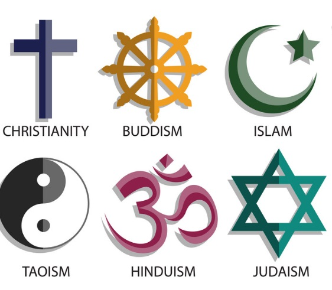

Boże Narodzenie w chrześcijaństwie jest obchodzone 25 grudnia i upamiętnia narodziny Jezusa Chrystusa. To czas radości, modlitw oraz spotkań rodzinnych. W wielu krajach chrześcijańskich Boże Narodzenie jest obchodzone z wielką pompą, z choinką, prezentami oraz wspólnym posiłkiem w Wigilię.
Choć Boże Narodzenie nie jest obchodzone w islamie, wielu muzułmanów szanuje Jezusa jako proroka. W kulturach muzułmańskich okres świąteczny może być okazją do spotkań rodzinnych, ale obchodzenie narodzin Jezusa nie jest elementem tradycji islamskiej. Jednak w niektórych krajach muzułmańskich, zwłaszcza w społecznościach z dużym odsetkiem chrześcijan, obchodzenie Bożego Narodzenia może być obecne w formie tradycji lokalnych.
W judaizmie Boże Narodzenie nie jest obchodzone, ponieważ Żydzi nie uznają Jezusa za Mesjasza. Mimo to, Żydzi żyjący w krajach, gdzie dominują chrześcijanie, mogą brać udział w tradycjach związanych z okresem świątecznym, takich jak kolędowanie, choć nie są to wydarzenia religijne. Żydzi obchodzą Hanukę, święto światła, które często przypada w tym samym czasie co Boże Narodzenie.
W hinduizmie Boże Narodzenie nie jest częścią tradycji religijnych, ale w Indiach, gdzie żyje wielu chrześcijan, święto to może być obchodzone przez lokalne społeczności. W miastach takich jak Goa, w których chrześcijanie stanowią dużą część ludności, Boże Narodzenie obchodzone jest z wielką radością, z dekoracjami, prezentami i rodzinnymi spotkaniami.
Buddyści również nie obchodzą Bożego Narodzenia, ponieważ nie jest to część tradycji buddyjskich. Jednak w niektórych krajach buddyjskich, zwłaszcza w regionach z dużą liczbą chrześcijan, jak na Filipinach, mogą pojawić się obchody Bożego Narodzenia w formie kulturalnych wydarzeń. W buddyzmie bardziej istotne są inne święta, takie jak Wesak, upamiętniające narodziny, oświecenie i śmierć Buddy.
Boże Narodzenie jest świętem wyjątkowym dla chrześcijan, ale ma również różnorodne znaczenie w innych religiach. Choć w islamie, judaizmie, hinduizmie i buddyzmie nie obchodzi się Bożego Narodzenia, to w wielu krajach, gdzie mieszkają osoby wyznające te religie, święta Bożego Narodzenia mają charakter kulturowy i społeczy. Święto to jest także okazją do wspólnego świętowania i budowania więzi międzyludzkich w atmosferze pokoju i miłości.
